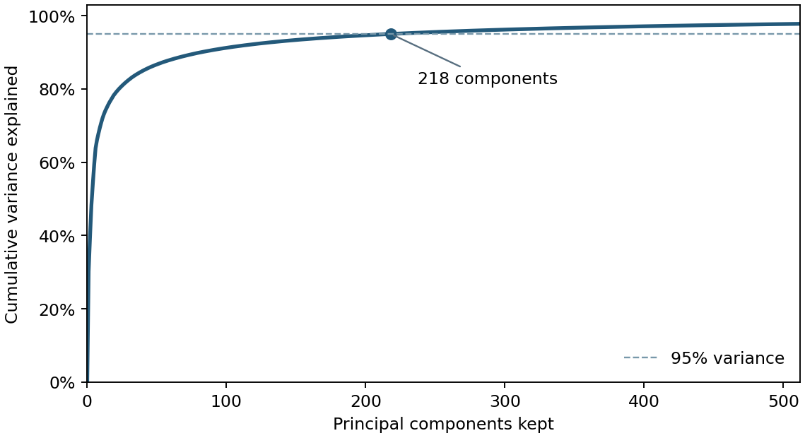
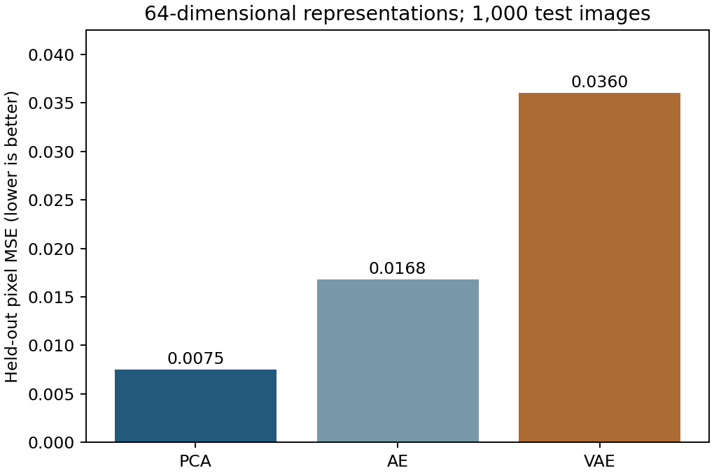
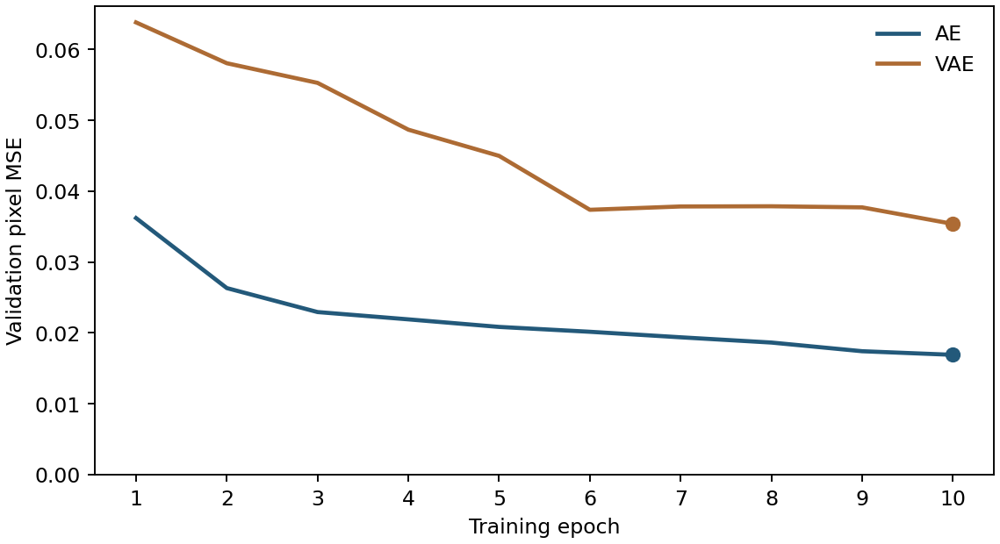

Three ways to compress an image
Each image starts as 4,096 pixel values. The diagrams use the 64-dimensional codes from the later benchmark.
PCA
Learn orthogonal directions of variation and represent each image in a linear subspace.
- Image vector
- 64 linear coordinates
- Inverse projection to pixels
Dense autoencoder
Learn a nonlinear encoder and decoder together to reconstruct the input.
- Encoder
- 64-value code
- Decoder to pixels
Variational autoencoder
Learn a distribution for each input and regularize it toward a standard normal prior.
- Encoder
- 64-dimensional distribution
Draw a sample or use the mean - Decoder to pixels
What I explored in the original coursework
I used the first 10,000 images in the sorted course copy of CelebA. PCA needed 218 components to reach 95% of the variance in those images. The dense autoencoder used 128 dimensions and the VAE used 64. I trained both neural models for ten epochs, logged their training losses and compared reconstructions on training examples.
The variance calculation asks how many linear directions describe the original sample. The later benchmark fixes the dimensions and compares pixel error on held-out images.


Generate from a latent draw
I drew ten 64-dimensional vectors from a standard normal distribution and decoded them with the original VAE. This exercised its generative path without first encoding an input image.
Perturb a code and decode again
For both neural models, I decoded the clean code and a copy with added Gaussian noise. The VAE started from a posterior sample in this exercise. Comparing the outputs explored sensitivity to changes in the code. The examples were qualitative.
A controlled test on held-out images
In the September 2026 revision, I used the same preprocessing, random image split, 64 dimensions and test pixel mean squared error (MSE) for all three methods. Seed 42 fixed the split. The VAE decoder used the posterior mean for validation and test, so the score did not depend on a fresh latent draw.
- Train
- 8,000
- Validation
- 1,000
- Test
- 1,000


| Model | MSE ↓ |
|---|---|
| PCA | 0.00750 |
| Dense autoencoder | 0.01677 |
| Variational autoencoder | 0.03600 |
PCA was the strongest pixel-reconstruction baseline here. The neural models depend on their architectures and optimization. The VAE also uses a KL penalty to shape its latent distribution, which supports sampling and gives it a different training objective.
How I selected the neural checkpoints
I trained each network for 10 epochs and selected its checkpoint by validation pixel MSE. The lowest validation MSE was recorded at epoch 10 for both models. That is the best observed checkpoint within this training budget.


How far the comparison goes
PCA fits by decomposition, while AE and VAE train iteratively with different parameter counts and objectives. Pixel MSE measures fidelity to the same input pixels. Perceptual realism and generative usefulness are separate questions.
The random split separates images, so photos of the same person may appear across splits. The test results describe held-out images, with identity-level generalization untested.
This case study uses aggregate results and method diagrams. Photos, individual reconstructions, generated faces and trained weights remain private because permission to redistribute them has not been established. CelebA dataset terms.
Code and reproduction
Start with analysis.py and an authorized local image directory. Reproduction steps · Methods and original experiments · Saved benchmark outputs · Revision history